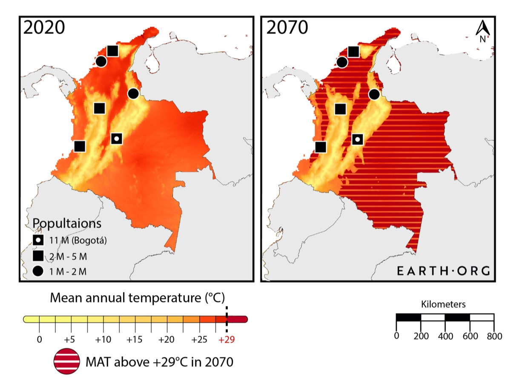
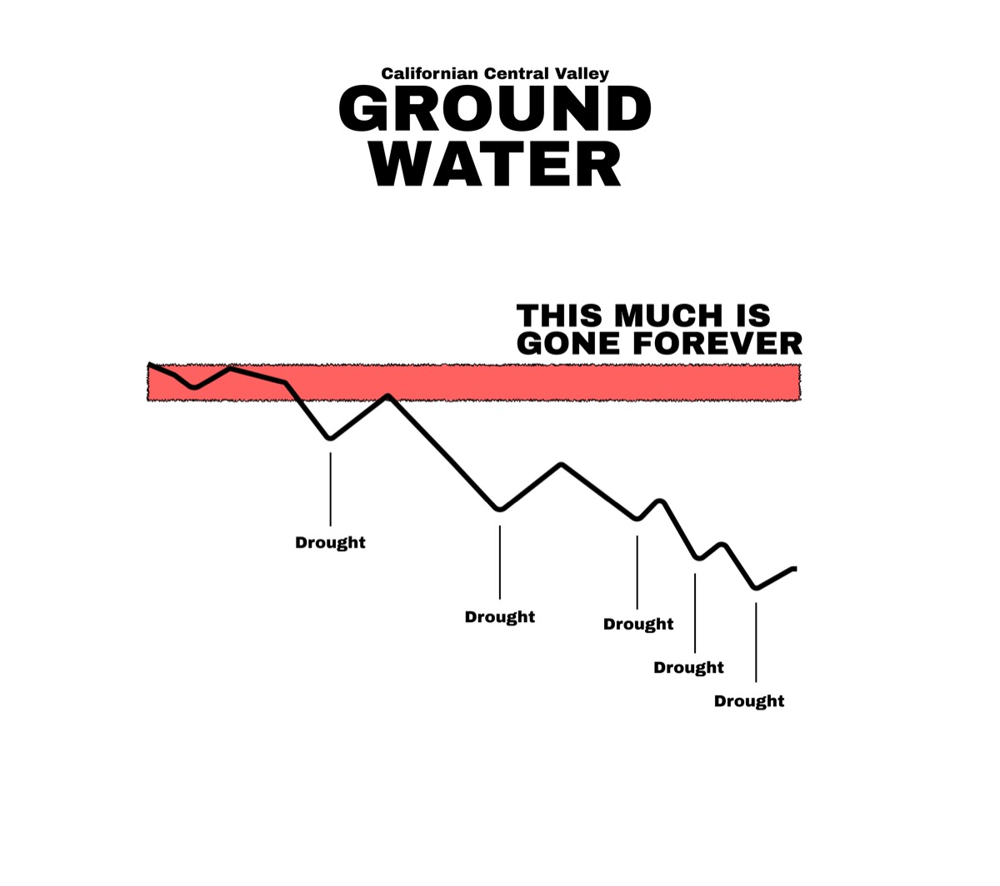
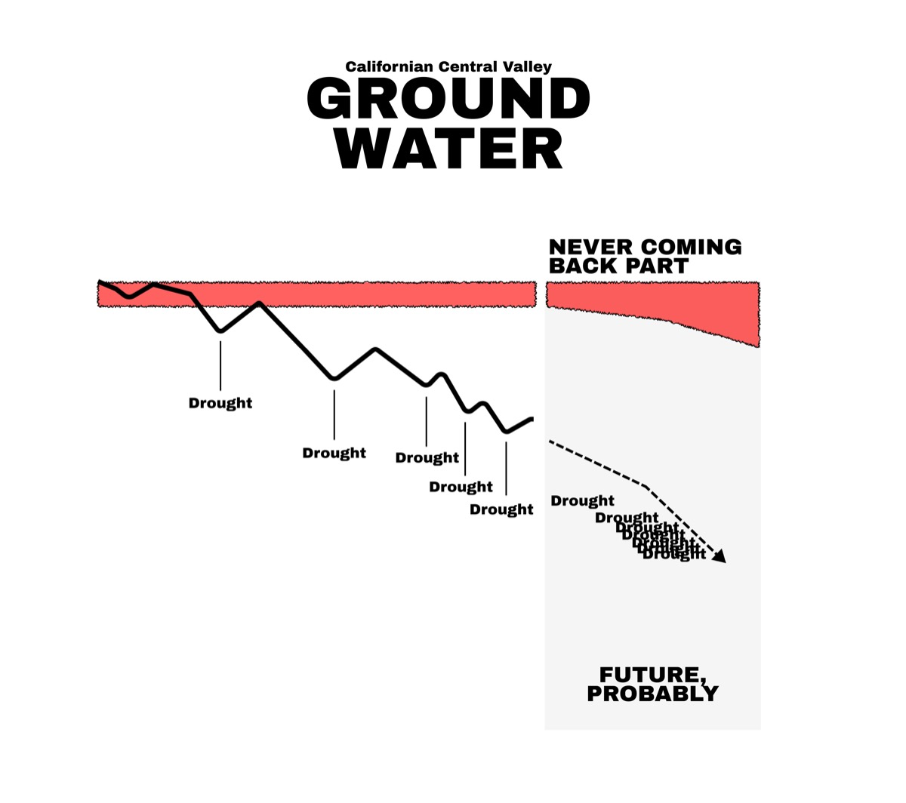

Work & Citations
Owen Mulhern
Data journalist and visualization designer. Third-party citations, press coverage, and selected work below.
Selected work
Skip to citations ↓
Earth.Org · Data viz · 2021
Too Hot to Live
A two-part series mapping cities where wet-bulb temperatures are projected to exceed human survivability limits by 2100. Colombia and Mexico are among the first nations to face permanently uninhabitable heat corridors under mid-range warming scenarios.
Read the series →


Original research · 2025
Recentof groundwater remaining
California's Central Valley
Original calculation estimating viable extraction time remaining in the Central Valley aquifer. Draws from Scanlon et al. 2012 depletion projections, CVHM2 basin modeling, satellite GRACE data for the depletion curve, and USGS estimates placing 15% of aquifer capacity permanently lost.
Academic & institutional citations
13 sourcesUPenn Environmental Innovations Initiative
University of Pennsylvania editorial cited Earth.Org fast fashion statistics and embedded an Owen Mulhern data visualization directly in the article body.
University of Washington -- Climate Science paper
"Mulhern 2020" cited in the opening section on historical CO₂ levels, referencing Earth.Org data journalism on atmospheric carbon concentrations.
Carbon & Climate Law Review -- JSTOR
Peer-reviewed journal article "The Pathway to a Green Gulf" (Vol. 15, No. 4, 2021) citing Earth.Org content, archived on JSTOR.
William & Mary Environmental Law & Policy Review
Law review article citing Earth.Org environmental data journalism.
Law review article citing Earth.Org content on environmental topics.
University of Akron Law Review
Law review article citing Earth.Org environmental data journalism.
Law journal article on fast fashion's climate impact, citing Earth.Org statistics in footnotes alongside UNEP and IUCN.
Rochester Institute of Technology -- Thesis
Graduate thesis citing Earth.Org research and data.
University of Rhode Island -- Applied History Lab
Policy white paper citing Earth.Org as a reference source.
ResearchGate -- Biodiversity Loss in India
Academic paper on biodiversity citing Earth.Org data journalism on ecological topics.
ResearchGate -- Subsidy Reforms for a Green Global Economy
Academic paper on green economic policy citing Earth.Org environmental data.
ZHAW Zurich University of Applied Sciences
Swiss university digital collection citing Earth.Org content.
Canadian Journal of Earth Sciences -- Environmental Science & Management
Peer-reviewed paper on lag times in environmental management citing Earth.Org data.
Government & think tanks
4 sourcesCalifornia State Hazard Mitigation Plan -- Governor's Office of Emergency Services
Official state government plan (Gavin Newsom, 2023) citing Earth.Org as a reference source in its hazard mitigation volume.
RUSI -- Royal United Services Institute
Occasional Paper by the UK's leading defence and security think tank: "Future IUU Fishing in a Warming World -- A Global Horizon Scan," citing Earth.Org data on ocean and climate topics.
Verisk -- Emerging Issues 2022
Verisk (global risk analytics, $3B+ revenue) blog post on emerging issues for insurers and risk managers, citing Earth.Org environmental data.
Qatar Planning & Statistics Authority -- Sukan Newsletter
Official government publication of Qatar's Planning and Statistics Authority citing Earth.Org content.
Press, editorial & republication
5 sourcesOceanMaterial -- Republication
Co-authored Earth.Org article on waste management and recycling republished in full under a formal editorial agreement, with byline credit.
Architecture and building science publication citing Earth.Org climate data in a piece on zero-carbon construction.
Editorial citing Earth.Org environmental content.
AI and sustainability editorial debate citing Earth.Org data on environmental topics.
Presbyterian Women -- Justice Live Links
Large faith organisation (USA) linking to Earth.Org environmental resources in their Bible study justice curriculum.
Industry & data aggregators
2 sourcesSylvan Apparel -- Fast Fashion Statistics
Industry statistics roundup listing Earth.Org alongside Statista as a primary data source, with backlink.
Peace Essay Contest -- Essay Booklet
Student essay competition publication citing Earth.Org climate content.
Journalist profile
1 sourceMuck Rack -- Verified Journalist Profile
Verified journalist profile on Muck Rack (the platform used by PR professionals to find and vet journalists), listing all Earth.Org bylines. Used by agencies and PRs to assess editorial reach and credibility.